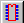
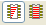
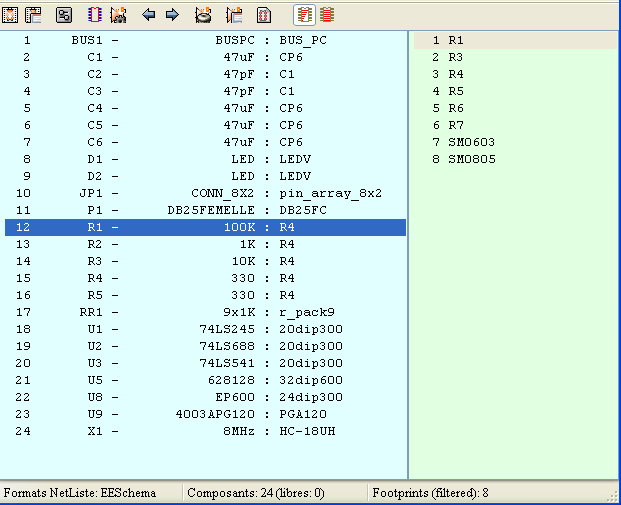

Cvpcb.
Headings
CVPCB allows you to assign each component that appears in the netlist created by the Schematic program to the name of the footprint which will represent it on a printed circuit board, and adds this information to the netlist.
Generally the netlist does not specify which footprint (i.e. the physical appearance of the component) the printed circuit software (PCBNEW) will have to display to create the general drawing of the card.
Components can be assigned to their corresponding footprints manually. You can create Equivalence files, which are look-up tables associating each component with its footprint. When equivalence files are available, automatic assignment is possible.
The list of the footprints available for the PCB software is contained in one or more FOOTPRINT libraries.
This interactive approach is much simpler than directly placing the assignments on the schematic, because as well as allowing automatic assignment, CVPCB, allows you to see the list of the footprints available, and to display them on the screen.
Interactive assignment of components with footprints or automatic assignment via equivalence files.
Generation (if necessary) of back- annotation files of this assignment to the schematic.
EESchema (without footprint references).
VIEW LOGIC WIRELIST.
VIEW LOGIC NETLIST * (.NET+.PKG)
Two files are generated for Pcbnew:
The enhanced Netlist file (with footprint references)
An auxiliary component assignment file . (.CMP).
cvpcb (the file is then selected in CVPCB, via the file menu) or cvpcb <filename>, (filename being the name of the netlist file to be processed, from the schematic tool Eeschema).
The name of the file can be given with or without extension.
The extensions will if necessary be supplied by the defined in cvpcb configuration.
The two generated files will have the same name (with different extensions).
The standard extension of the file to be processed is .net.
The standard extension of the generated netlist file is .net, and will replace the old .net.
The standard extension of the file assigning components to the corresponding footprints (also generated by CVPCB) is .cmp.
These standard extensions can be modified by changing Cvpcb configuration.
The Component window (on the left) displays the list of components appearing in the Netlist read.
The footprint window (on the right) displays the list of footprints contained in the libraries read.
The component window is empty if no file is loaded, and the footprint window can be also empty if no footprint libraries are found.

The various functions are:
|
|
|
|
|
|
|
|
|
 |
|
|
|
|
|
|
|
|
|
|
|
|
|
|
|
|
|
|
|
|
 |
|
Invoking the configuration menu displays the following screen:

The options are:
PcbNew:
Read the netlist file generated by Eeschema, enhance it and generate the .cmp file.
ViewLogic Wirelist:
Accept standard format Viewlogic “Wirelist” (extension .wir) and generate a netlist file in PcbNew format (and the file .cmp)
ViewLogicNet & Pkg:
Accept the standard Viewlogic format netlist (.net) associated with the component file (.pkg) and generate a netlist file in Pcbnew format (and the .cmp file).

To select a file with the mouse:
Del removes this name from the list.
Add adds a new name to the list, after the selected name
Ins adds a new name to the list, before the selected name.
Note:
Any modification of this list also affects pcbnew.

To select with the mouse a file name.
Del removes this name of the list.
Add adds a new name to the list, after the selected name
Ins adds a new name to the list, before the selected name

Lib Dir is the default path of the footprint file (.mod) and of the equivalence (.equ) files.
If this field is left empty, the default path used will be kicad/modules.
The Visu command allows display of the current footprint, i.e. the one that appears highlighted on the central line of the footprint window.
The various footprints can be displayed by clicking on the desired footprint (in the list of the footprints), as long as this window is in displayed.
One can also display the 3D view (if it has been created and assigned to the footprint)

The co-ordinates of the cursor are displayed at the bottom of the screen :
Absolute co-ordinates (X nnnn Y nnnn) and relative co-ordinates (dx nnnn dy nnnn)
The relative co-ordinates are zeroed by the space bar.
|
F1 |
Zoom In |
|
F2 |
Zoom Out |
|
F3 |
Refresh Display |
|
<space bar>: |
Zero relative co-ordinates. |

Displayed by right-clicking the mouse:
|
|
|
|

|
|
Display Options |
|
|
Zoom Level |
|
|
3D Display |

In the footprint window double-click on the name of the desired footprint (This name is highlighted), to assign it the component whose name is highlighted on the central line of the component window.
The next component in the list is selected:
Automatically after an assignment.
Manually using the mouse or cursor keys.
Double- click the left mouse button on the desired footprint
This is done like a new assignment:
Double-click the left mouse button on the new desired footprint
If the selected component has an allowed footprint list, the displayed footprint list in Cvpcb is filtered according to this list.
Without filtering:

With filtering:

Under Eeschema, the allowed footprint list was:

The icone allows or .forbids the filtering
When the filtering is not allowed, the full footprint list is shown.
These files allow automatic assignment.
They give the name of the corresponding footprint according to the name (value) of the component.
They consist of a line for each component.
Each line has the following structure:
'component name' 'footprint name'
Each name being framed by the letter ', the 2 names being separated by one or more spaces.
Example:
If the U3 component is circuit 14011 and its footprint is 14DIP300, the line is:
“14011” “14DIP300”
This a file can be used for back- annotation of a schematic but is not used by PCBNEW.
It consists of a line for each component, giving the name of the footprint according to its reference.
Example:
If the U3 component was assigned the footprint14DIP300, the generated line is
comp “U3” = footprint “14DIP300”
The file created has the root name of the CVPCB input file, with extension .stf, and is placed in the same folder as the generated netlist.
 Page
Page